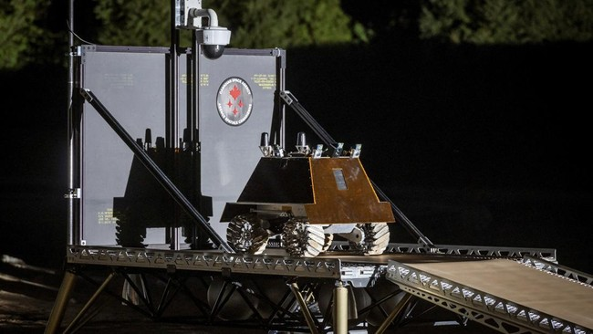

Wahana NASA Merapat ke Matahari, Catat Sejarah Jarak Terdekat
Purwakarta, AboutNEWS -- Wahana antariksa Parker Solar Probe terbang mendekati Matahari, Selasa (24/12), dengan jarak 6,1 juta kilometer dari permukaan Matahari. Capaian ini mencatatkan sejarah tersendiri bagi kemajuan umat manusia. Jarak tersebut merupakan yang terdekat yang pernah dicapai oleh manusia ke sebuah bintang. Fisikawan Ungkap Waktu di Bulan Berjalan Lebih Cepat dari Bumi
Wahana antariksa tanpa awak milik NASA ini diperkirakan terbang dengan kecepatan 692.000 kilometer per jam, kecepatan yang yang cukup untuk mencapai Tokyo dari Washington dalam waktu kurang dari satu menit. NASA menyebut flyby atau terbang lintas yang cepat akan menjadikan wahana ini sebagai objek buatan manusia tercepat dalam sejarah. Misi yang dilakukan Parker Solar Probe kini melakukan pencapaian bersejarah sejak diluncurkan pada 12 Agustus 2018. Wahana ini diambil dari nama penemunya, Dr. Eugene Parker yang merupakan seorang astrofisikawan yang memelopori bidang penelitian heliosfer. Parker adalah orang pertama yang memiliki wahana antariksa yang dinamai dengan namanya. Ahli astrofisika yang penelitiannya merevolusi pemahaman manusia tentang Matahari dan ruang antarplanet ini meninggal dunia pada usia 94 tahun di bulan Maret 2022. Sebelum meninggal, Parker masih dapat menyaksikan bagaimana wahana antariksa tersebut dapat membantu memecahkan misteri tentang Matahari, lebih dari 65 tahun setelah misi tersebut direncanakan.
NASA Pulihkan Komunikasi dengan Wahana Sejauh 25 Miliar Km dari Bumi NASA Tunda Pendaratan di Bulan Hingga 2027 Kepulangan 2 Astronaut NASA dari Luar Angkasa Diundur, Ini Alasannya Dikutip dari CNN, wahana Parker Solar Probe menjadi wahana antariksa pertama yang "menyentuh Matahari" dengan berhasil terbang melintasi korona Matahari untuk mengambil sampel partikel dan medan magnet bintang tersebut pada Desember 2021. Selama enam tahun terakhir dari misi tujuh tahun wahanaantariksa ini, Parker Solar Probe telah mengumpulkan data untuk memberikan pencerahan kepada para ilmuwan tentang beberapa misteri terbesar Matahari. Para ahli heliosfer telah lama bertanya-tanya bagaimana angin Matahari dihasilkan dan juga mengapa korona Matahari jauh lebih panas daripada permukaannya. Para ilmuwan juga ingin memahami bagaimana lontaran massa korona (CME), atau awan besar gas terionisasi yang disebut plasma dan medan magnet yang meletus dari atmosfer luar Matahari, disusun. Ketika lontaran ini mengarah ke Bumi, lontaran ini dapat menyebabkan badai geomagnetik yang dapat memengaruhi satelit serta infrastruktur listrik dan komunikasi di Bumi.
Misi kali ini adalah salah satu terbang lintas terakhir Parker, yang dapat melengkapi jawaban atas pertanyaan-pertanyaan tersebut serta menyingkap misteri-misteri baru dengan menjelajahi wilayah Matahari yang belum dipetakan. "Parker Solar Probe mengubah bidang heliosfer," kata Helene Winters, manajer proyek Parker Solar Probe dari Laboratorium Fisika Terapan Universitas Johns Hopkins. "Setelah bertahun-tahun menantang panas dan debu di bagian dalam tata surya, menerima ledakan energi Matahari dan radiasi yang belum pernah dilihat oleh pesawat ruang angkasa mana pun, Parker Solar Probe terus berkembang," tambahnya. Penerbangan bersejarah ini merupakan satu dari tiga pendekatan Parker ke Matahari. Dua penerbangan lainnya dijadwalkan pada 22 Maret dan 19 Juni.
Baca artikel AboutNEWS "Wahana NASA Merapat ke Matahari, Catat Sejarah Jarak Terdekat".